172 — Modelo operativo FinOps y economía unitaria
Parte: 14 — Plataformas avanzadas, capstones y carrera
Nivel: experto-frontera · Horas estimadas: 4
Laboratorio: finops · Estado: EXECUTABLE_CORE
🎯 Propósito
Convertir lo de las clases 142 y 143 en algo que funcione con sesenta equipos y no dependa de una persona. La clase reparte los tres papeles que hacen falta, fija el ritmo —qué se mira a diario, a la semana, al mes y al trimestre—, y desarrolla el lenguaje que permite hablar de coste con quien no es ingeniero: la economía unitaria, con su parte difícil, que es repartir lo compartido de forma que alguien pueda entenderlo. Y termina con los dos finales conocidos de estos programas: la policía del gasto y el panel que nadie mira.
📚 Resultados de aprendizaje
Al finalizar podrás:
- Repartir los tres papeles del modelo operativo y saber qué decide cada uno.
- Establecer un ritmo con cadencias distintas, en vez de un proyecto.
- Construir el coste por unidad, incluidos los compartidos.
- Prever el gasto a partir de la actividad del negocio, no de la factura anterior.
- Evitar que el programa acabe siendo policía o decoración.
🧩 Conceptos centrales
| Concepto | Comprensión verificable |
|---|---|
modelo operativo |
Reparto de papeles, decisiones y cadencias que hace que el gobierno del coste ocurra sin depender de una persona. |
coste por unidad |
Coste dividido entre una magnitud del negocio. Es el único lenguaje común entre ingeniería, finanzas y negocio. |
coste de servir |
Todo lo que cuesta atender a un cliente: infraestructura, plataforma, soporte y licencias. Va más allá de la factura de la nube. |
previsión por generadores |
Prever la actividad del negocio y multiplicarla por el coste unitario, en vez de extrapolar la factura. |
policía del gasto |
Modo de fallo en que el programa se dedica a señalar culpables. Produce rodeos, no ahorro. |
coste en la decisión |
Poner la cifra donde se decide —el cambio propuesto, la revisión de diseño— en vez de en un informe posterior. |
🧠 Modelo mental
El nivel experto no consiste en conocer más productos, sino en formular mejores preguntas, validar supuestos y sostener decisiones frente a costo, riesgo y operación.
Aplicado a esta clase, separa siempre cuatro planos: intención (qué necesita el usuario), configuración (qué declaramos), estado observado (qué existe de verdad) y evidencia (cómo sabemos que cumple). Confundirlos produce diseños que se ven correctos en un diagrama pero fallan al operar.
🗺️ Flujo de razonamiento

📖 Desarrollo
1. Tres papeles, y por qué no basta una persona
El error inicial de casi todas las organizaciones es nombrar a alguien responsable del coste de la nube. Y falla porque las decisiones que cuestan dinero están repartidas:
quien elige una réplica de más
quien fija una retención de 90 días
quien deja un entorno encendido
quien decide la clave de partición
y quien firma un compromiso a tres años
→ son decenas de personas, y ninguna es esa
Y los tres papeles que sí hacen falta:
INGENIERÍA
toma las decisiones que generan coste
necesita: ver el coste de lo suyo, en su unidad, y en el momento
de decidir
decide: arquitectura, dimensionado, retención, aprovechamiento
FINANZAS
posee el presupuesto, la previsión y los contratos
necesita: atribución fiable y una previsión creíble
decide: compromisos, presupuestos por área, negociación
NEGOCIO
posee la unidad que da sentido al coste
necesita: coste por pedido, por cliente, por transacción
decide: precios, qué clientes se atienden y con qué nivel
Y el papel que a veces existe y conviene entender bien:
un equipo o persona que FACILITA
construye la atribución, los paneles y las herramientas
mantiene el ritmo
y traduce entre los tres
→ facilita; NO decide por ellos
→ si decide, se convierte en la policía del apartado cuarto
Y la condición previa de todo, que la clase 142 ya estableció:
sin atribución fiable no hay modelo operativo
→ y la atribución se impone en la creación, no se pide
clases 142, 169
Y una cifra que conviene tener para dimensionar el esfuerzo:
el gobierno del coste no es gratis
facilitación: 0,5-1 persona por cada ~50 equipos
tiempo de los equipos: 1-2 h al mes cada uno
→ y eso hay que compararlo con lo que ahorra, igual que en la clase 170
2. El ritmo
Sin cadencias, esto es un proyecto que termina y una factura que vuelve a crecer. Lo que se mira, y cuándo:
DIARIO — automático
desviaciones por servicio, comparadas consigo mismas clase 142
con aviso al equipo dueño y enlace a la línea de cambios
→ detecta en 1-2 días lo que antes se veía en la factura
SEMANAL — cada equipo, 10 minutos
su gasto, su tendencia y su coste por unidad
y las tres partidas que más han subido
→ en la misma reunión donde ya miran sus objetivos clase 126
MENSUAL — la organización
coste por unidad, global y por servicio
previsión frente a real, y por qué difieren
bolsa sin asignar y su tendencia
y las tres oportunidades mayores del trimestre
TRIMESTRAL — decisiones que cuestan tiempo
compromisos: renovar, ampliar o dejar vencer clase 143
dimensionado y capacidad
y revisión de lo que sobra: huérfanos, entornos, cuentas
clases 169, 171
ANUAL — decisiones grandes
negociación de contratos
decisiones de arquitectura con impacto de coste clase 155
y revisión de la unidad elegida: ¿sigue siendo la buena?
Y las dos cadencias que más rinden son las dos primeras, por motivos distintos:
la diaria porque reduce el tiempo de detección de semanas a un día
la semanal porque pone la cifra delante de quien decide, cada semana,
sin que nadie tenga que pedirlo
Y una regla sobre la reunión mensual, que es donde estos programas mueren:
si la reunión mensual repasa números sin tomar decisiones,
se convierte en un informe y deja de venir gente
→ cada reunión sale con acciones, con dueño y con fecha
→ y empieza revisando las de la anterior
Y lo que no debe estar en el ritmo:
revisiones individuales de equipos «que gastan mucho»
→ gastar mucho no es un problema si el coste por unidad es bueno
→ y esa reunión es el primer paso hacia la policía del gasto
3. La economía unitaria
Es lo que permite hablar con quien no es ingeniero, porque el coste absoluto sube cuando el negocio va bien y no dice nada.
Elegir la unidad, que es la primera decisión:
buena unidad
la entiende el negocio sin traducción
crece con la actividad
y se puede medir con fiabilidad
ejemplos por pedido, por transacción, por cliente activo,
por documento procesado, por hora de vídeo, por consulta
mala unidad
«por usuario registrado», si muchos no usan nada
«por servidor», que es una medida de la solución, no del negocio
Y conviene tener dos o tres, no una:
una global para el conjunto
y una por línea de negocio o por tipo de cliente
→ porque un coste medio esconde clientes que cuestan diez veces más
Las tres capas del coste, que hay que separar:
1. DIRECTO ATRIBUIBLE
lo que se puede asignar sin discusión: su cómputo, su base
2. COMPARTIDO REPARTIDO
red, clúster, observabilidad, plataforma
→ con un método explicable, no perfecto clase 142
3. COSTE DE SERVIR COMPLETO
lo anterior más soporte, licencias por cliente y el tiempo de
la gente que lo atiende
→ es el que necesita negocio para decidir precios
Y la tercera es la que casi nunca se calcula y la que cambia decisiones:
un cliente puede tener un coste de infraestructura pequeño
y consumir cuatro horas de soporte al mes
→ y entonces no es rentable, aunque su factura de nube sea baja
La previsión, que es lo que finanzas necesita y donde más se falla:
mal extrapolar la factura del mes anterior
→ no distingue crecimiento de ineficiencia
→ y falla en cuanto hay una campaña o una migración
bien POR GENERADORES
negocio prevé la actividad: pedidos, clientes, transacciones
ingeniería aporta el coste por unidad y su tendencia
previsión = actividad prevista × coste unitario
+ cambios conocidos (migraciones, compromisos)
Y su ventaja, que es la que convence a finanzas:
cuando la previsión falla, se puede saber POR QUÉ
¿la actividad fue distinta a lo previsto?
¿o el coste por unidad se movió?
→ y son dos conversaciones distintas, con dueños distintos
Y una recomendación práctica: publicar la previsión con su banda, no con una cifra. Una previsión sin incertidumbre declarada se trata como un compromiso y se incumple.
4. Los dos finales conocidos
La policía del gasto. El programa empieza a señalar equipos que gastan mucho.
síntomas
reuniones donde se explica por qué se ha gastado
comparaciones entre equipos con contextos distintos
y objetivos de reducción impuestos sin contexto
efecto
se optimiza lo visible y se esconde lo demás ley 17
se dejan de pedir recursos que hacían falta
y aparecen decisiones peores que cuestan menos en la nube
y más en tiempo de personas
Y lo que lo evita:
hablar SIEMPRE en coste por unidad, no en coste absoluto
comparar cada equipo consigo mismo, no con otros clase 107
y recordar que el objetivo no es gastar menos: es gastar bien
Y la formulación que funciona:
mal «tu equipo gastó 12.000 € este mes»
bien «tu coste por pedido subió de 0,038 € a 0,052 € desde el día 12;
coincide con este despliegue»
El panel que nadie mira. El otro final:
síntomas
un panel completo, con todo desglosado
y ninguna decisión tomada a partir de él en seis meses
Y lo que lo evita es lo que la clase 142 ya señaló:
poner la cifra DONDE SE DECIDE
en el cambio propuesto: «esto añade 310 €/mes»
en la revisión de diseño: coste por unidad esperado
en el panel del servicio, junto al objetivo clase 125
y en la ficha del catálogo clase 095
→ el informe mensual es para la organización; la decisión
ocurre en otro sitio
La madurez, para saber por dónde se va:
PRIMERO atribución y visibilidad
etiquetas impuestas, gasto por equipo, desviaciones diarias
DESPUÉS economía unitaria y optimización
coste por unidad, escalera de la clase 143, compromisos
AL FINAL coste como entrada de diseño
una de las cuatro columnas de toda decisión clase 155
y previsión por generadores
Y el error de saltarse el primero:
optimizar sin atribuir produce ahorros que nadie sostiene
→ y a los seis meses el gasto ha vuelto
Y las medidas del propio modelo operativo:
proporción del gasto atribuida
coste por unidad, y su tendencia
error de la previsión mensual, y su descomposición
tiempo desde que empieza una desviación hasta que se actúa
decisiones tomadas a partir de datos de coste, contadas
horas que los equipos dedican a esto
y cuántos equipos miran su coste sin que se lo pidan
La última es la que dice si el modelo está vivo.
Y la lista de comprobación de la clase:
☐ los tres papeles están asignados, con lo que decide cada uno
☐ quien facilita no decide por los demás
☐ la atribución está impuesta en la creación
☐ hay detección diaria de desviaciones con aviso al dueño
☐ cada equipo ve su gasto en su reunión semanal
☐ la reunión mensual sale con acciones, dueño y fecha
☐ hay revisión trimestral de compromisos y de lo que sobra
☐ existen dos o tres unidades de negocio elegidas y medidas
☐ el coste de servir incluye soporte, licencias y personas
☐ la previsión se hace por generadores y con banda
☐ el coste aparece en el cambio propuesto y en el panel del servicio
☐ se habla en coste por unidad, y cada equipo se compara consigo mismo
☐ se cuentan las decisiones tomadas a partir de datos de coste
Y el cierre que enlaza con la clase siguiente: el coste es una de las cuatro columnas; la fiabilidad es otra, y a esta escala también necesita un modelo operativo y una forma de saber en qué punto está la organización. Es la materia de la clase 173.
🔬 Ejemplo trabajado
CloudShop tiene sesenta equipos, la atribución resuelta y una persona dedicada al coste que se ha convertido en el cuello de botella. El ejercicio monta el modelo operativo y descubre dos cosas: que hay clientes que cuestan más de lo que pagan y que la previsión fallaba por el motivo equivocado.
El punto de partida.
personas dedicadas al coste 1
peticiones que recibía al mes 41
decisiones que tomaba por otros 31
equipos que miraban su gasto sin que se lo pidieran 4 de 60
error de la previsión mensual, media ±19 %
reuniones mensuales de coste sí
acciones salidas de esas reuniones en 6 meses 3
Una persona decidiendo por sesenta equipos, y una reunión mensual que producía media acción al mes.
El reparto de papeles.
```text antes después quién decide dimensionado y retención la persona cada equipo quién decide compromisos la persona finanzas, con datos de ingeniería quién decide precios y niveles nadie negocio qué hace la persona dedicada decidir por otros facilitar: atribución, paneles, herramientas y ritmo
peticiones que recibe al mes 41 6 decisiones que toma por otros 31 0
**El ritmo, y el efecto de cada cadencia.**
```text
DIARIO
ya existía desde la clase 142
tiempo de detección de una desviación 1,2 días
SEMANAL
se añadió al orden del día de la reunión de cada equipo,
junto a sus objetivos
duración 10 min
equipos que la mantienen a los 6 meses 54 de 60
decisiones tomadas en esas reuniones, 6 meses 71
MENSUAL
cambió de formato: empieza revisando las acciones anteriores
acciones por reunión 0,5 → 4,2
asistencia cayendo → estable
TRIMESTRAL
compromisos, dimensionado y limpieza
ahorro atribuible en 12 meses 6.900 €/mes
ANUAL
negociación con dos proveedores y revisión de la unidad
Y las setenta y una decisiones de las reuniones semanales son la cifra que más dice: decisiones pequeñas, tomadas por quien puede tomarlas, cerca del momento.
La unidad, y los tres intentos.
intento 1 «coste por servidor»
→ nadie del negocio la entendía; medía la solución
intento 2 «coste por usuario registrado»
→ 340.000 registrados, 31.000 activos
→ la cifra bajaba sola al registrar gente que no usaba nada
intento 3 «coste por pedido» y «coste por cliente activo al mes»
→ las dos las entiende el negocio y crecen con la actividad
Y las tres capas, calculadas:
```text por pedido por cliente activo directo atribuible 0,029 € 1,90 € compartido repartido 0,009 € 0,60 € plataforma 0,003 € 0,20 € ──────── ─────── coste de infraestructura 0,041 € 2,70 €
soporte humano — 1,10 € licencias por cliente — 0,80 € ─────── coste de servir 4,60 €
**Los clientes que no eran rentables.**
Con el coste de servir por cliente, y cruzándolo con lo que paga cada uno:
```text
clientes empresariales 190
coste de servir medio 4,60 €/mes
coste de servir, percentil 90 18,40 €/mes
clientes que cuestan más de lo que pagan 14
por consumo desproporcionado 9 clase 154
por soporte: más de 3 h/mes 3
por precio mal fijado desde 2022 2
Y las tres decisiones que se tomaron, ninguna técnica:
los 9 de consumo cuotas y conversación comercial clase 154
los 3 de soporte se investigó por qué llamaban tanto
→ dos usaban mal una función; se rehízo
su interfaz y las llamadas bajaron un 80 %
los 2 de precio renegociados al renovar
Y el hallazgo del segundo grupo es el más interesante: el coste de soporte era un síntoma de un problema de producto, y solo se vio al incluirlo en el coste de servir.
La previsión, y por qué fallaba.
método anterior extrapolar la factura del mes anterior
error medio ±19 %
descomposición de un mes con error del 24 %
¿fue la actividad? pedidos previstos 290.000, reales 310.000 (+7 %)
¿fue el coste unitario? previsto 0,041 €, real 0,047 € (+15 %)
→ dos causas distintas, y el método antiguo no las distinguía
Y con previsión por generadores:
```text antes después método extrapolación actividad × unitario + cambios conocidos error medio ±19 % ±6 % se publica con banda no sí se puede descomponer el error no sí conversaciones sobre el error «gastamos de más» «la actividad subió un 7 % y el unitario un 15 %, por esto»
Y el 15 % del coste unitario de ese mes se rastreó en cuarenta minutos hasta un despliegue concreto, gracias a la línea de cambios de la clase 121.
**Los dos finales evitados.**
```text
POLICÍA DEL GASTO
la reunión mensual incluía una tabla de «los cinco que más gastan»
→ se retiró: el que más gastaba tenía el mejor coste por pedido
→ sustituida por «los cinco cuyo coste unitario más ha subido»
efecto en 6 meses
equipos que dejaron de pedir recursos por miedo 3 → 0
decisiones peores para reducir factura 2 → 0
→ un equipo había quitado una réplica de lectura y
había empeorado su latencia y su objetivo
PANEL QUE NADIE MIRA
paneles de coste existentes 9
abiertos alguna vez en 90 días 2
→ se retiraron 7 y la cifra se llevó a donde se decide
coste en el cambio propuesto clase 142
cambios con estimación 211
cambios modificados tras verla 19
coste en el panel del servicio, junto al objetivo sí
coste en la ficha del catálogo sí
A los doce meses.
```text antes después papeles asignados 1 3 + facilitación decisiones tomadas por la persona dedicada 31 0 equipos que miran su gasto sin pedírselo 4 de 60 54 de 60 acciones por reunión mensual 0,5 4,2 unidades de negocio medidas 0 2 coste de servir calculado no sí clientes que cuestan más de lo que pagan no se sabía 14 → 3 error de la previsión mensual ±19 % ±6 % previsión descomponible no sí paneles de coste 9 2 decisiones tomadas con datos de coste 3 / 6 meses 71 / 6 meses coste por pedido 0,057 € 0,038 € horas de los equipos dedicadas a esto no se medía 1,3 h/mes
**La lección que esta clase traslada a la parte 14**: una persona tomaba treinta y una decisiones al mes por sesenta equipos, y la reunión mensual producía media acción. Al repartir los papeles y añadir diez minutos semanales en las reuniones que ya existían, las decisiones pasaron a setenta y una en seis meses, **tomadas por quien podía tomarlas**. Y el hallazgo que cambió el negocio no vino de la factura de la nube: al incluir el soporte en el coste de servir aparecieron tres clientes cuyo problema no era el consumo sino **una función mal diseñada que les hacía llamar cuatro veces al mes**.
## 🧪 Laboratorio guiado
Ejecuta desde la raíz:
```bash
python classes/part-14-advanced-platform-capstones-career/172-modelo-operativo-finops-y-economia-unitaria/lab.py
El laboratorio selecciona el motor de práctica finops y produce
lab_result.json. El escenario, sus comprobaciones y el artefacto esperado corresponden a
esta clase; no requiere credenciales y deja explícito qué debe revalidarse en un sandbox real.
- Lee
exercise.stepsy formula una predicción antes de ejecutar. - Ejecuta la práctica y verifica todos los elementos de
checks. - Provoca el caso de
negative_testy explica la señal observada. - Materializa
operating-model-finopsenevidence/usando la plantilla indicada. - Para proveedor real, sigue
sandbox.requires, registra costo y ejecutadestroy.
Evidencia esperada
El artefacto principal es un cálculo trazable con unidad, supuesto y sensibilidad. Además, la entrega debe incluir el comando ejecutado, la salida estructurada y una conclusión que no exceda lo observado.
🏆 Reto verificable
Construye operating-model-finops para el caso CloudShop. Incluye una alternativa descartada,
un supuesto que pueda falsarse, una prueba de fallo y una decisión de rollback.
✅ Criterio de aceptación
- [ ]
lab.pytermina con código 0 y genera JSON válido. - [ ] La entrega conecta al menos tres requisitos con mecanismos verificables.
- [ ] Existe una prueba positiva y una prueba negativa con evidencia.
- [ ] Seguridad, costo y operación aparecen como decisiones, no como anexos.
- [ ] Se declara una limitación y una condición que obligaría a revisar el diseño.
- [ ] Otra persona puede repetir el recorrido sin conocimiento tácito.
⚠️ Errores frecuentes
| Síntoma | Causa probable | Corrección |
|---|---|---|
| Una sola persona decide sobre el coste de toda la organización | Las decisiones que cuestan dinero están repartidas y no se pueden centralizar | Reparte los tres papeles; quien facilita construye herramientas y mantiene el ritmo, pero no decide por los equipos. |
| El programa de coste se apaga a los seis meses | Era un proyecto, no un ritmo | Cadencias distintas: diaria automática, semanal en la reunión que ya existe, mensual con acciones, trimestral de compromisos y anual de contratos. |
| La reunión mensual repasa números y no cambia nada | No sale con acciones ni revisa las anteriores | Empieza revisando las acciones previas y termina con dueño y fecha para cada una nueva. |
| La previsión falla y no se sabe por qué | Se extrapola la factura anterior, que mezcla crecimiento con eficiencia | Prevé la actividad del negocio y multiplícala por el coste unitario; publica con banda y descompón el error. |
| Los equipos dejan de pedir recursos que necesitan | El programa se ha convertido en policía del gasto | Habla en coste por unidad, compara cada equipo consigo mismo y retira las tablas de quién gasta más. |
| Hay paneles de coste completos y ninguna decisión sale de ellos | La cifra está en un informe y no donde se decide | Lleva el coste al cambio propuesto, a la revisión de diseño, al panel del servicio y a la ficha del catálogo. |
🛡️ Seguridad, ética y costo
Trabaja con cuentas propias o sandboxes autorizados. No publiques secretos, identificadores reales ni datos personales. Antes de crear recursos pagos define presupuesto, etiquetas y comando de destrucción; después verifica que no queden recursos huérfanos. Los ejemplos locales enseñan contratos, pero no certifican cumplimiento ni disponibilidad de producción.
❓ Preguntas de comprobación
- ¿Por qué no basta con nombrar a un responsable del coste?
- ¿Qué se mira en cada cadencia y cuáles dos rinden más?
- ¿Qué tres capas componen el coste por unidad y cuál se olvida?
- ¿Qué ventaja tiene prever por generadores frente a extrapolar la factura?
- ¿Cuáles son los dos finales conocidos de estos programas y qué los evita?
🔗 Referencias
- FinOps Foundation (2025). FinOps framework: personas, phases and capabilities — papeles y ciclo del modelo operativo. https://www.finops.org/framework/
- FinOps Foundation (2025). Unit economics and forecasting — coste por unidad y previsión por generadores. https://www.finops.org/framework/capabilities/forecasting/
- Storment, J. R. y Fuller, M. (2023). Cloud FinOps, caps. 6-9 — cadencias, informar frente a cobrar y madurez. https://www.oreilly.com/library/view/cloud-finops-2nd/9781492098348/
- AWS (2025). Cost management operating model — atribución, previsión y gobierno del gasto. https://docs.aws.amazon.com/whitepapers/latest/how-aws-pricing-works/aws-cost-management-tools.html
- Google Cloud (2025). Cost governance and unit cost metrics — métricas unitarias y su uso en decisiones. https://cloud.google.com/architecture/framework/cost-optimization
- Documentación oficial vigente del servicio implementado; registra URL y fecha de consulta.
📥 Descargar: Parte 14 en PDF · Manual integral